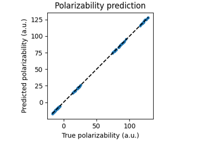
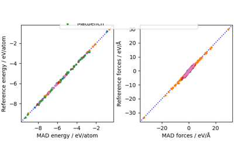
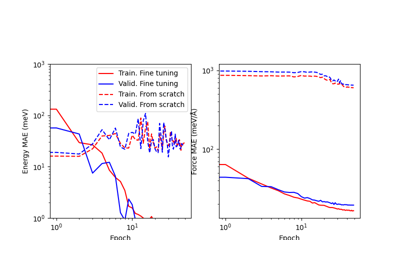
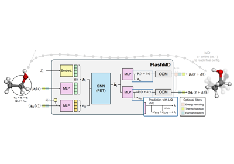
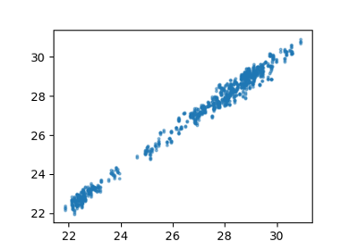

metatensor¶
Metatensor
is a library providing a cross-platform data interchange API
for atomistic simulation and beyond. It also powers
metatomic – an API to define atomistic models that can be
used to run simulations using several different atomistic
simulation packages and metatrain a set of tools to facilitate
training and evaluating ML models.
Atomistic Water Model for Molecular Dynamics
Equivariant linear model for polarizability

Equivariant model for tensorial properties based on scalar features

The PET-MAD universal potential

MD using direct-force predictions with PET-MAD
![Evaluating forces as a direct output of a ML model accelerates their evaluation, by up to a factor of 3 in comparison to the traditional approach that evaluates them as derivatives of the interatomic potential. Unfortunately, as discussed e.g. in this paper, doing so means that forces are not conservative, leading to instabilities and artefacts in many modeling tasks, such as constant-energy molecular dynamics. Here we demonstrate the issues associated with direct force predictions, and ways to mitigate them, using the generally-applicable PET-MAD potential. See also this recipe for examples of using PET-MAD for basic tasks such as geometry optimization and conservative MD, and this for an example of how to use direct forces to accelerate training.](../_images/sphx_glr_pet-mad-nc_thumb.png)
Fine-tuning the PET-MAD universal potential

Conservative fine-tuning for a PET model
Long-stride trajectories with a universal FlashMD model

Computing NMR shielding tensors using ShiftML

Hamiltonian Learning for Molecules with Indirect Targets
![This tutorial introduces a machine learning (ML) framework that predicts Hamiltonians for molecular systems. Another one of our cookbook examples demonstrates an ML model that predicts real-space Hamiltonians for periodic systems. While we use the same model here to predict a molecular Hamiltonians, we further finetune these models to optimise predictions of different quantum mechanical (QM) properties of interest, thereby treating the Hamiltonian predictions as an intermediate component of the ML framework. More details on this hybrid or indirect learning framework can be found in ACS Cent. Sci. 2024, 10, 637−648. and our preprint arXiv:2504.01187.](../_images/sphx_glr_hamiltonian-qm7_thumb.png)
ML collective variables in PLUMED with metatomic